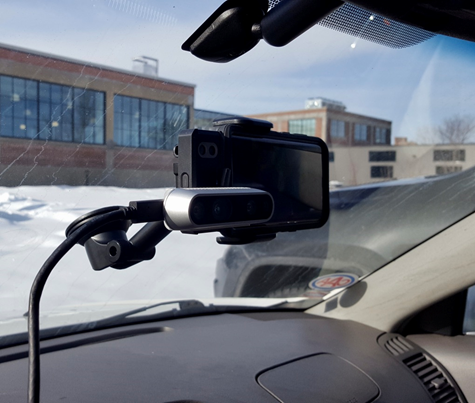
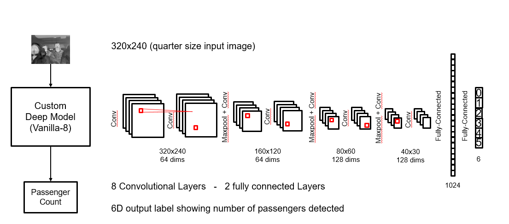
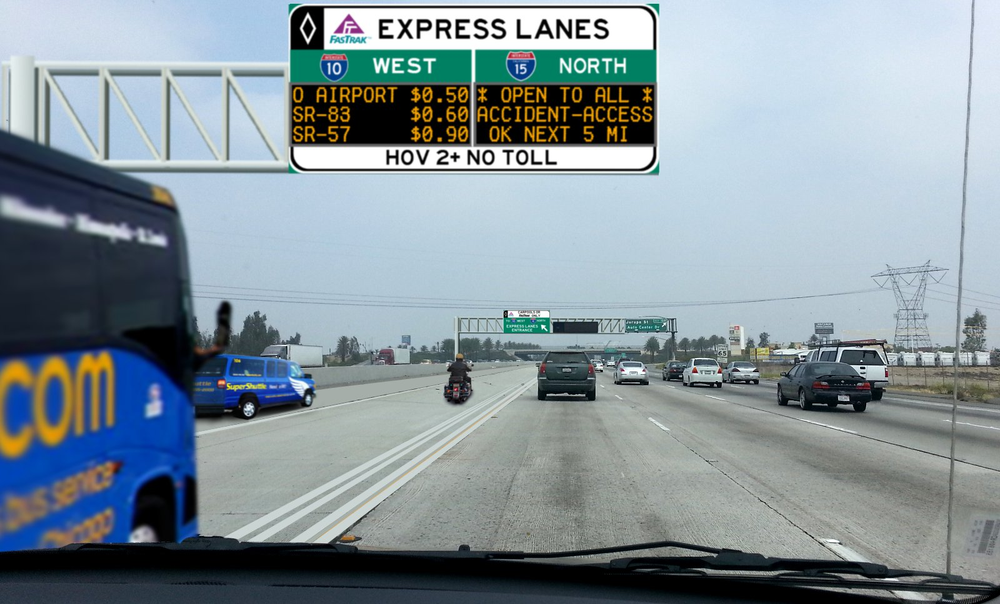
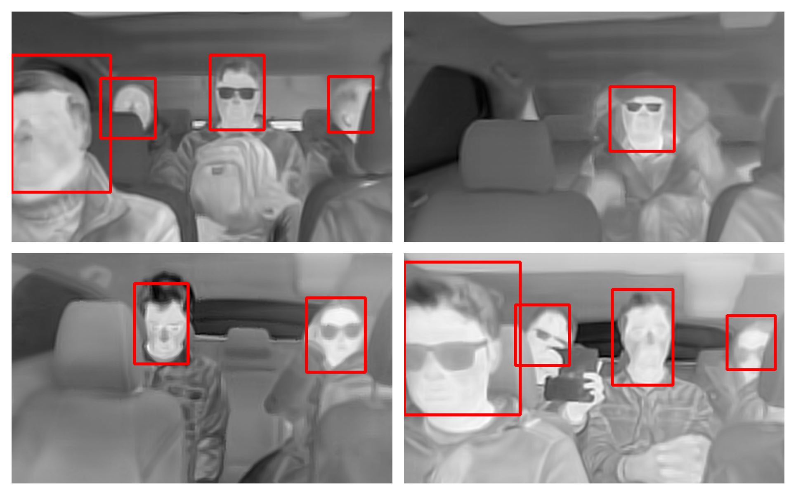

Vehicle Occupancy Detection using Thermal Sensors

Objective
To develop a method for detecting the occupancy of vehicles (number of passengers) using a thermal camera.
Outcome
A complete system capable of high accuracy vehicle occupancy detection using thermal images.
Challenges
- Run in real-time
- Low space and computation requirements to be able be ported to a dedicated image processing chip
- Perform reliably to be released as a consumer product
Core Model Architecture

The system captures raw thermal data from a thermal sensor, and evaluates captured thermal data to detect the number of passengers in the vehicle depending on the human body temperature.
Applications

This technology can be used in monitoring and enforcement of High Occupancy Vehicle (HOV) and High Occupancy Toll (HOT) lanes
Sample detections
